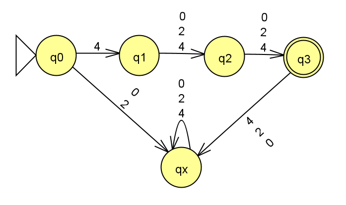

Homework 2
Last updated: Mon, 8 Apr 2024 11:40:46 -0400
Out: Mon Feb 12, 12:00pm EST Due: Mon Feb 19 Wed Feb 21, 12:00pm EST (noon)
This assignment explores closed operations for regular languages and nondeterministic finite automata (NFAs).
Homework Problems
An Function on Languages (8 points)
Are Regular Languages Closed Under \mathrm{ADD0}? (8 points)
DFAs vs NFAs (8 points)
Equivalent Machines (7 points)
README (1 point)
Total: 32 25 points
Submitting
Submit your solution to this assignment in Gradescope hw2. Please assign each page to the correct problem and make sure your solutions are legible.
A submission must also include a README containing the required information.
1 An Function on Languages
Consider a function, called \mathrm{ADD0}, which converts a given input language to a new output language such that for each string w in the input language, there is a corresponding one in the output language that starts with the same characters as w but has an extra \texttt{0} at the end. Formally:
\mathrm{ADD0}(L)=\{w\texttt{0}\mid \textrm{ where }w\textrm{ is a string}\in L\}
If the alphabet for a language L is \Sigma, then the alphabet for \mathrm{ADD0}(L) is \Sigma \cup \{\texttt{0}\}.
Consider the following language: A = \{w\mid w \textrm{ is a three digit number starting with } \texttt{4}\} The alphabet for the language is \Sigma=\{\texttt{0},\texttt{2},\texttt{4}\}. Prove that A is a regular language.
What is the language \mathrm{ADD0}(A)? (answer must be a set)
Prove that \mathrm{ADD0}(A) is a regular language
2 Are Regular Languages Closed Under \mathrm{ADD0}?
Prove that the class of regular languages is closed under the \mathrm{ADD0} operation.
In other words, prove if the input language L is a regular language, then \mathrm{ADD0}(L) is a regular language.
Hint:
Give the equivalent IF-THEN statement that must be proved.
Give a proof of this IF-THEN statement.
Make sure your answer is in the form of a "Statements and Justifications" table, as explained in lecture (and also Hopcroft Chapter 1).
Since we dont know the input language L, if you need to give examples in your proof, you’ll need to express them in terms of the unknown input languages, e.g.:
"say we have a language L and string s_1\in L and s_2\notin L, then we know that ?? \in \mathrm{ADD0}(L) and ??\notin \mathrm{ADD0}(L)"
You should have at least 2 examples, which must include at least one that is in the output language and one that is not in the output language.
3 DFAs vs NFAs
Consider the diagram from Homework 1 DFA Formal Description:

For this problem, assume the diagram is an NFA.
In class we learned that an NFA’s formal description has five components, e.g. N = (Q,\Sigma,\delta,q_{start},F), where \delta:Q\times\Sigma_\varepsilon\rightarrow\mathcal{P}(Q) is the transition function mapping a state and input symbol (or no symbol, in the case of an empty transition) to a set of states.
Come up with a formal NFA description of the diagram above.
Compare your answers from this problem and Homework 1 and give two differences between the formal description of a DFA and the formal description of an NFA.
4 Equivalent Machines
NOTE: Since this problem requires reasoning about NFA computation (which we have not covered fully yet) it is no longer required for this assignment (Homework 2). It will be moved to the next homework.
Two machines are considered equivalent if they recognize the same language (i.e., they accept the same strings).
Come up with a function \texttt{convert} : \textsf{DFA} \rightarrow \textsf{NFA} where, given some input DFA M = (Q,\Sigma,\delta,q_{start},F) that satisfies the formal definition of DFAs from class, \texttt{convert}(M)= some NFA (Q^\prime,\Sigma,\delta^\prime,q^\prime_{start},F^\prime) that satisfies the formal definition of NFAs, and is equivalent to the input DFA.
To prove "equivalence" of two machines, use the typical "Examples Table", except the two columns should now be two machines.
Use your answers from Homework 1 DFA Formal Description and Homework 2 DFAs vs NFAs to help guide your thinking, and to double-check that your answer is correct.